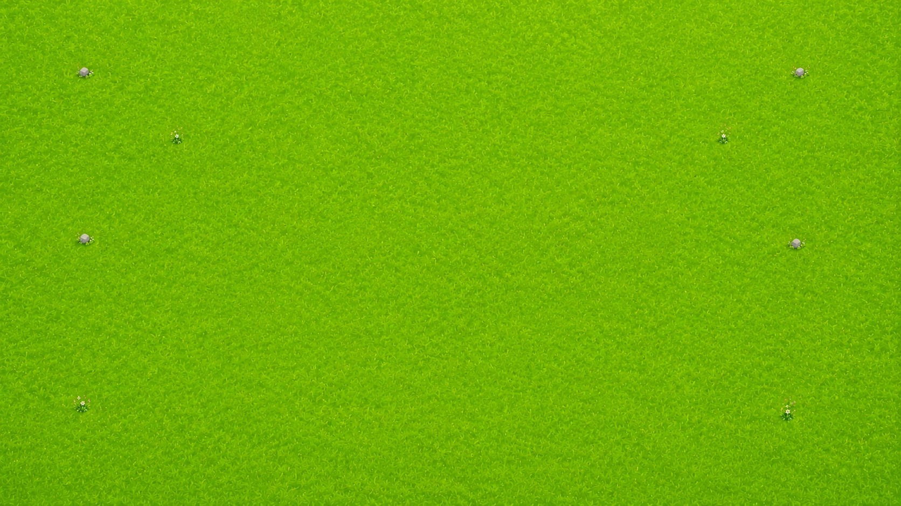

5 m
5 m
Drag this corner
What stayed the same?
Perimeter
20 m
Fixed
16m²
Area
Length
Area
L = 8 · W = 8 · A = 64
Fence the Farm
Start build
13 × 3 m
Perimeter 32 m
0m²
Best build
8 × 8 m
Perimeter 32 m
0m²
You found it
13 × 3 → 8 × 8
The closer the two sides, the more grass — same 32 m of fence
Drag the corner. The perimeter cannot change.
L + W = 16
A = 8 × 8 = 64 m²
P = 2 (L + W)
32 = 2 (L + W)
L + W = 16
Balanced sides give the most areafor the same perimeter
Fence around the outside
P = 2 (L + W)
P = 2 (8 + 8)
P = 32 m
Grass inside
A = L × W
A = 8 × 8
A = 64 m²
Fixed perimeter
does not mean
Fixed area
P = 2L + 2W
fence around the outside
32 = 2L + 2W
your fence
L + W = 16
divide both sides by 2
W = 16 − L
L = 8 → W = 8
A = L (16 − L)
That curve is a parabola — its peak is your best build.
Master builder
Same fence. Smarter shape.
4 farms completed
Pick a fence
Loading
Debug navigatorpress D
-
States
Toggles
-
Same fence. More grass. Find out how.
Perimeter — 20 m of fence, locked
Area — the grass inside, L × W
Drag this corner
Area went up. Perimeter is still 20 m.
Try another shape
Find the maximum area
Maximum area — 25 m²
Same perimeter, bigger area
Beat 32 m² — same perimeter
Push it further.
Test an idea: make the field longer
Now find the maximum area
Longer field. Less area.
Better. Keep going.
New record — 33 m²
Record matched — 32 m²
Fixed
What stayed the same?
Fence length
Area
Exactly — only the shape changed.
Look at the locked value.
What will happen to the area?
Increase
Stay the same
Decrease
Let us test it.
Your prediction matched the result.
Your experiment gave you the evidence.
Record smashed!
Longer was not more area.
Master build.
Build exactly 48 m²
Now find the maximum area
2 m² short — grow it
2 m² over — bring it back
Exactly 48 m². Precision build.
Exactly 48 m². Same fence.
See the proof
Your longest
Area
square metres